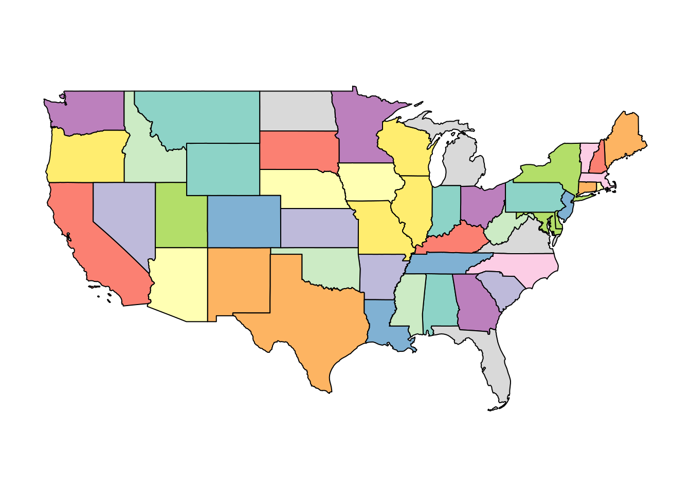
Introduction
Up to this point, most of our questions have been about how much. How much yield changes with rainfall. How much disease severity changes with treatment. How much biomass changes with nitrogen.
This module adds a question that shows up everywhere in agronomy:
Where?
Where in the field are the low-testing areas? Where do soils change? Where do yields drop off? Where should a recommendation change across the landscape instead of staying constant?
In spatial data, observations are often not independent. Values that are close together tend to be more similar than values far apart. This idea is called spatial dependence, and it is the reason maps and interpolation work at all.
That is what spatial statistics is really about. It is not just about making pretty maps. It is about making sure location is treated as part of the data-generating process.
And, as usual, the flashy part is rarely the hard part. The hard part is making sure the geometry, units, and scale all make sense before you start interpreting patterns.
So in this lecture we are going to work through three ideas that show up again and again in real agronomic work:
- Projection and coordinate systems: how spatial data locate objects on the earth
- Vector data and shapefiles: points, lines, and polygons that represent things like yield points and field boundaries
- Rasters and interpolation: grids of predicted values used to summarize spatial trends and build management maps
The goal is not for you to memorize every spatial package in R. The goal is for you to become hard to fool. If a map looks impressive but the coordinate system is wrong, I want you to notice. If two layers do not line up, I want you to ask why. If someone hands you a variable-rate map, I want you to understand the basic logic behind how that map was produced.
Part 1: Projection and Coordinate Systems
Why Projection Matters
Projection is the part of spatial analysis that most people try to ignore until it breaks something.
Here is the underlying problem: the earth is not flat, but our maps are.
So any time we put locations from the earth onto a flat display or into a flat analysis system, we have to decide how that translation will happen. That translation is what a projection does.
A coordinate reference system (CRS) includes the coordinate system and, if needed, the projection used to flatten the Earth.
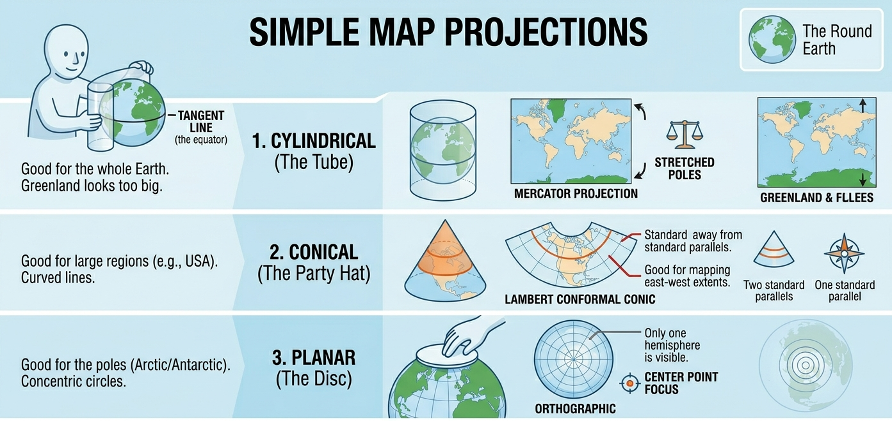
Every projection is a compromise. Some preserve shape better. Some preserve area better. Some are better for measuring local distances. Some are mainly convenient because mapping software uses them by default.
For example, if you are comparing the total area of management zones across a field or region, using a non-equal-area projection can bias those calculations.
At field scale, several projections may look similar to your eye. That is exactly why this can be dangerous. A map can look fine and still be the wrong system for calculating area, joining layers, or measuring distance.
So here is the habit I want us to build:
Before trusting any map, check the coordinate reference system.
That one habit will save you a surprising amount of pain.
Before doing anything spatial, use this quick checklist:
- What is the CRS?
- What is the geometry type?
- What are the units?
- What is the grain (point, polygon, or raster)?
WGS 84: The Familiar One
The most familiar system is WGS 84, identified by EPSG 4326.
This is the latitude-longitude system most of us recognize from GPS coordinates. It uses angular units, not distance units. So when you see values like \(-93.2\) and \(44.9\), you are looking at longitude and latitude in degrees.
A key consequence of this is that you cannot treat differences in longitude and latitude as simple distance changes. A one-degree change in longitude does not correspond to the same distance everywhere on Earth. It shrinks as you move toward the poles.
WGS 84 is excellent for storing locations and for displaying points on the globe. It is often the first system you encounter when working with field boundaries, sampling points, or online map data.
In practice, distance calculations in WGS84 require geodesic methods; for most workflows, it is simpler and safer to transform to a projected CRS.
This is the version of the United States that most people have in their head. But notice the key point: those coordinates are in degrees, not meters. Let’s take a look at the first few rows of the data frame to check the coordinates.
Coordinates are meaningless unless you know the CRS attached to them.
Simple feature collection with 6 features and 1 field
Geometry type: MULTIPOLYGON
Dimension: XY
Bounding box: xmin: -104.0532 ymin: 37.91685 xmax: -74.69491 ymax: 43.50088
Geodetic CRS: WGS 84
state_name geometry
1 Maryland MULTIPOLYGON (((-76.04621 3...
2 Iowa MULTIPOLYGON (((-96.62187 4...
3 Delaware MULTIPOLYGON (((-75.77379 3...
4 Ohio MULTIPOLYGON (((-82.86334 4...
5 Pennsylvania MULTIPOLYGON (((-80.51989 4...
6 Nebraska MULTIPOLYGON (((-104.0531 4...Let us isolate Iowa and look at its border points.
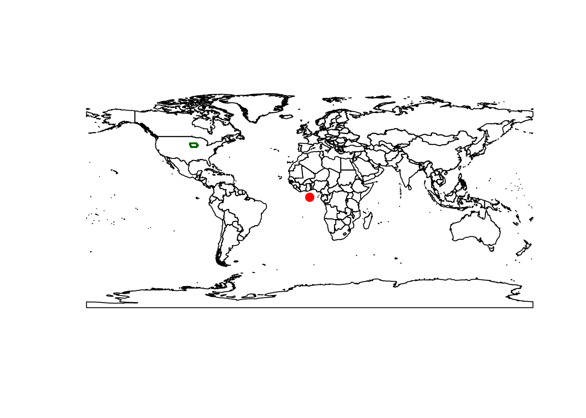
If we check the coordinates of the first few rows, you will see the coordinates are longitudes and latitudes. For the Upper Midwest, longitude is negative and latitude is positive because we are west of the Prime Meridian and north of the Equator.
Simple feature collection with 6 features and 1 field
Geometry type: POINT
Dimension: XY
Bounding box: xmin: -96.62187 ymin: 42.77926 xmax: -96.50031 ymax: 42.95939
Geodetic CRS: WGS 84
state_name geometry
2 Iowa POINT (-96.62187 42.77925)
2.1 Iowa POINT (-96.57794 42.82764)
2.2 Iowa POINT (-96.53785 42.87847)
2.3 Iowa POINT (-96.54047 42.9086)
2.4 Iowa POINT (-96.54169 42.92258)
2.5 Iowa POINT (-96.50031 42.95939)That is fine for locating things. It is not ideal for all measurements.
Web Mercator: Convenient, Not Sacred
Another common system is Web Mercator, identified by EPSG 3857.
This is widely used by web maps. It is convenient. It is familiar. It is also not magical. It is just one projection among many.
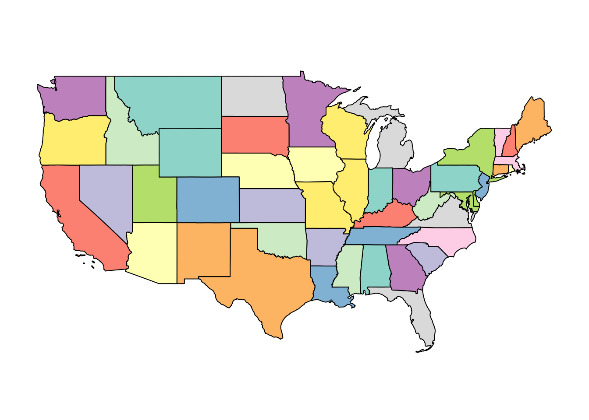
Now the coordinates are no longer in degrees. They are expressed in projected units, often meters (but always check).
Simple feature collection with 6 features and 1 field
Geometry type: POINT
Dimension: XY
Bounding box: xmin: -10755900 ymin: 5278432 xmax: -10742370 ymax: 5305793
Projected CRS: WGS 84 / Pseudo-Mercator
state_name geometry
2 Iowa POINT (-10755898 5278432)
2.1 Iowa POINT (-10751007 5285774)
2.2 Iowa POINT (-10746544 5293493)
2.3 Iowa POINT (-10746836 5298070)
2.4 Iowa POINT (-10746972 5300195)
2.5 Iowa POINT (-10742365 5305793)This projection is useful because many mapping tools expect it. But if your job is to compute area accurately, or to perform field-scale analysis, do not assume the default web map system is the best analytical choice.
A useful rule of thumb:
- Some coordinate systems are mainly for display.
- Others are better suited for analysis.
Web Mercator is excellent for visualization but often a poor choice for measurement.
Equal-Area Projections: Better for Area Questions
If the question is about area, then an equal-area projection is often the better choice.
Here is the U.S. National Atlas Equal Area system, EPSG 2163.
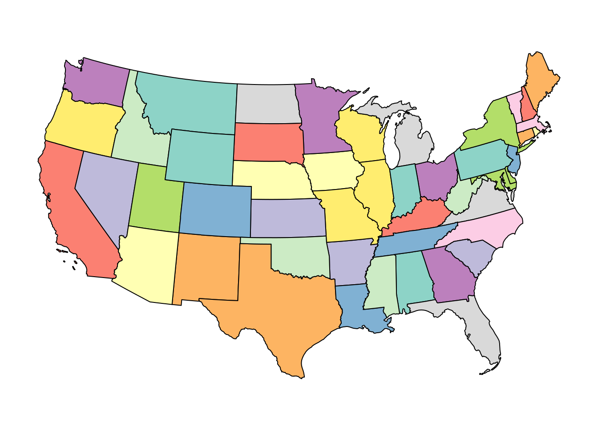
The map looks a little different because the distortion has been redistributed. That is the point. We are trading off shape so that area is represented more faithfully.
Simple feature collection with 6 features and 1 field
Geometry type: POINT
Dimension: XY
Bounding box: xmin: 275683.8 ymin: -241224.8 xmax: 284755.3 ymax: -220794
Projected CRS: NAD27 / US National Atlas Equal Area
state_name geometry
2 Iowa POINT (275683.8 -241224.8)
2.1 Iowa POINT (279045.8 -235699.3)
2.2 Iowa POINT (282077.1 -229914.3)
2.3 Iowa POINT (281724.7 -226576.8)
2.4 Iowa POINT (281561.2 -225027.7)
2.5 Iowa POINT (284755.3 -220794)Notice that the numbers changed again. Same state. Same border. Different coordinate system. That is why coordinates are meaningless unless you know the CRS attached to them.
UTM: Often Useful for Local Work
For local and regional work, a projected UTM system is often a sensible choice because it uses distance-based units and behaves well over a more limited geographic area.
UTM divides the Earth into zones, each with its own local projection. That helps reduce distortion within a zone.
The main idea is not that you memorize zone numbers. The main idea is that local projected systems are often more appropriate for field-scale operations than latitude-longitude coordinates.
A simple rule is to use the UTM zone that covers your study area, or use software defaults when transforming to UTM.
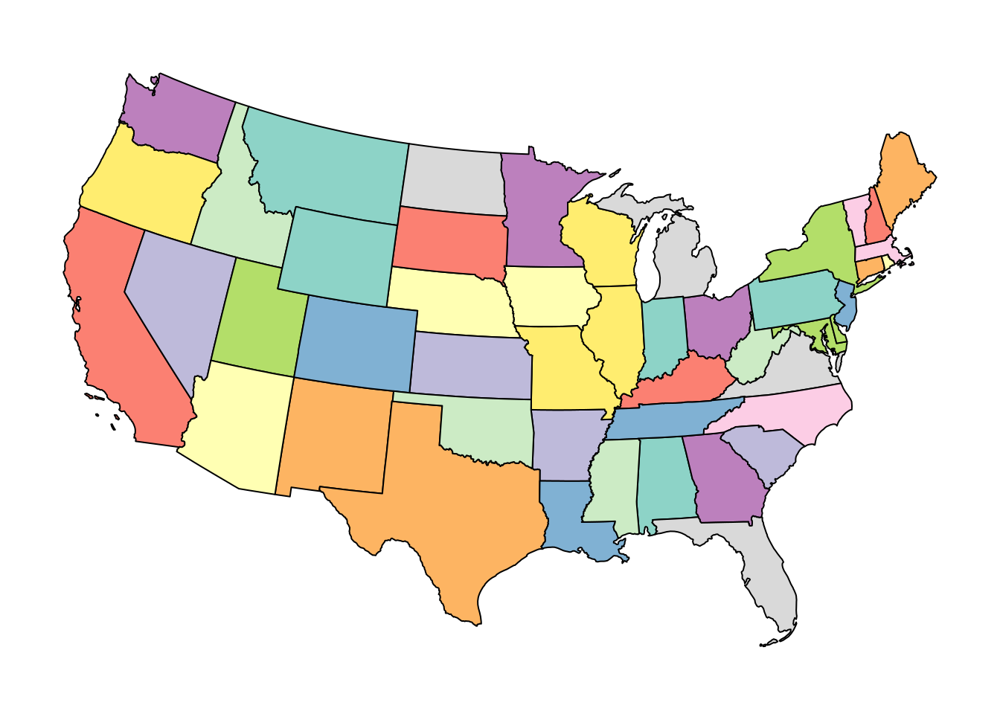
Simple feature collection with 6 features and 1 field
Geometry type: MULTIPOLYGON
Dimension: XY
Bounding box: xmin: -430361.5 ymin: 4302650 xmax: 2071922 ymax: 4822687
Projected CRS: WGS 84 / UTM zone 15N
state_name geometry
1 Maryland MULTIPOLYGON (((1993054 434...
2 Iowa MULTIPOLYGON (((203716.8 47...
3 Delaware MULTIPOLYGON (((1980236 454...
4 Ohio MULTIPOLYGON (((1344005 466...
5 Pennsylvania MULTIPOLYGON (((1552225 460...
6 Nebraska MULTIPOLYGON (((-428738.2 4...And here again are Iowa border coordinates in that projected system.
Simple feature collection with 6 features and 1 field
Geometry type: POINT
Dimension: XY
Bounding box: xmin: 203716.8 ymin: 4742667 xmax: 214495 ymax: 4762252
Projected CRS: WGS 84 / UTM zone 15N
state_name geometry
2 Iowa POINT (203716.8 4742667)
2.1 Iowa POINT (207539.8 4747887)
2.2 Iowa POINT (211054.1 4753394)
2.3 Iowa POINT (210980.9 4756748)
2.4 Iowa POINT (210947 4758305)
2.5 Iowa POINT (214495 4762252)Projection Summary
Here is the practical version of all of that:
- WGS 84 is common for storing locations and GPS-style coordinates
- Web Mercator is common for web maps
- Equal-area systems are better when area is central to the question
- Local projected systems are often better for measuring distance or doing field-scale spatial operations
If you remember only one thing from this section, remember this:
Two layers that look like maps are not ready to analyze together until their coordinate systems are compatible.
One of the easiest ways to see why this matters is to look at the same data in two different projections side by side.
Below, the left panel shows the contiguous United States in WGS84 (EPSG 4326). This is the geographic coordinate system, latitude and longitude as plain degrees. I also drew a regular red grid on top of the map. In WGS84, that grid looks like a simple set of square cells.
The right panel shows the exact same data reprojected to the US National Atlas Equal Area system (EPSG 2163). The state boundaries still describe the same country, but the red grid now bends and stretches. That is the key visual idea: when you change projections, you are changing how the curved Earth is laid onto a flat map.
Neither version is wrong. They describe the same Earth. But they make different trade-offs, and they cannot be analyzed together without first choosing one and transforming both layers to it.
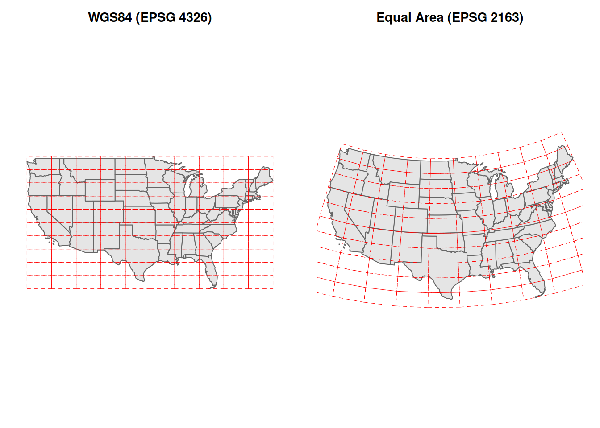
Part 2: Vector Data and Shapefiles
Case Study: A Yield Map
Now let us move from general map concepts into an actual agronomic example.
We will start with a yield map from a field in Iowa.
library(sf)
# Yield monitor points with per-location yield values.
corn_yield <- st_read(
"data/example-field/example-field.shp",
quiet = TRUE
)Printing the object tells us a lot.
Simple feature collection with 6 features and 12 fields
Geometry type: POINT
Dimension: XY
Bounding box: xmin: -93.15033 ymin: 41.66641 xmax: -93.15026 ymax: 41.66644
Geodetic CRS: WGS 84
DISTANCE SWATHWIDTH VRYIELDVOL Crop WetMass Moisture Time
1 0.9202733 5 57.38461 174 3443.652 0.00 9/19/2016 4:45:46 PM
2 2.6919269 5 55.88097 174 3353.411 0.00 9/19/2016 4:45:48 PM
3 2.6263101 5 80.83788 174 4851.075 0.00 9/19/2016 4:45:49 PM
4 2.7575437 5 71.76773 174 4306.777 6.22 9/19/2016 4:45:51 PM
5 2.3966513 5 91.03274 174 5462.851 12.22 9/19/2016 4:45:54 PM
6 3.1840529 5 65.59037 174 3951.056 13.33 9/19/2016 4:45:55 PM
Heading VARIETY Elevation IsoTime yield_bu
1 300.1584 23A42 786.8470 2016-09-19T16:45:46.001Z 88.00674
2 303.6084 23A42 786.6140 2016-09-19T16:45:48.004Z 88.30063
3 304.3084 23A42 786.1416 2016-09-19T16:45:49.007Z 88.51525
4 306.2084 23A42 785.7381 2016-09-19T16:45:51.002Z 88.93883
5 309.2284 23A42 785.5937 2016-09-19T16:45:54.002Z 89.68208
6 309.7584 23A42 785.7512 2016-09-19T16:45:55.005Z 90.06548
geometry
1 POINT (-93.15026 41.66641)
2 POINT (-93.15028 41.66641)
3 POINT (-93.15028 41.66642)
4 POINT (-93.1503 41.66642)
5 POINT (-93.15032 41.66644)
6 POINT (-93.15033 41.66644)This is an sf object, and that is one of the most convenient formats in R for spatial work.
It behaves a lot like a data frame, but one column contains geometry. That geometry column stores the spatial object associated with each row.
Before doing anything fancy, read the metadata at the top.
- What kind of geometry is this: points, lines, or polygons?
- What CRS is attached to it?
- How many features are there?
Those are not trivial details. They determine what you can meaningfully do next.
In this case, the geometry type is POINT, which means each row corresponds to a location where a yield value was recorded.
Plot the Yield Points
A map is a good first look because it lets us see both the geometry and the data values.
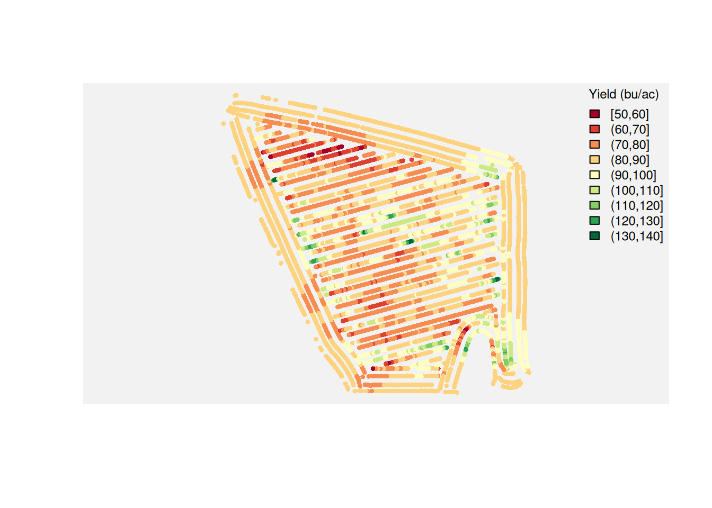
This is already useful. You can see where the high and low yielding areas tend to cluster.
And that should immediately raise a question:
If management was mostly constant across the field, why did yield vary so much by location?
Many factors could be involved: subtle elevation changes, drainage, compaction, pest pressure, historical management, and soil differences.
Soil is not the only explanation, but it is often one of the most plausible and testable first hypotheses. That is why the next step is to bring in a soil layer.
Adding SSURGO Soil Data
The Soil Survey Geographic Database, or SSURGO, is one of the most useful resources you can bring into agronomic spatial analysis.
It contains map units and soil attributes that can help explain why some parts of a field behave differently from others.
Two important caveats before we use it:
- SSURGO is not perfect, and map units are generalized.
- SSURGO was not originally designed to resolve every sub-field pattern at yield-monitor resolution.
SSURGO map units are often much coarser than yield monitor data, so they may explain broad trends but miss within-field variability.
So we should treat SSURGO as a strong contextual layer, not as ground truth for every point in the field.
First, we create a field polygon from the outer boundary of the yield points.
field_poly <- st_convex_hull(st_union(corn_yield))
plot(field_poly)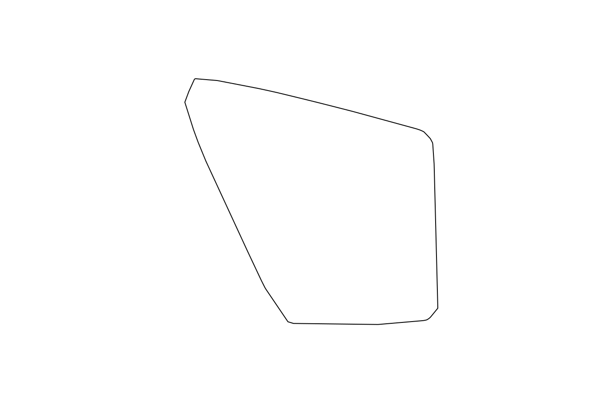
Now we request SSURGO data using get_ssurgo_tables() from the apsimx package.
library(apsimx)
soil_tables <- get_ssurgo_tables(aoi = field_poly)For this lecture, we are not going to walk through all SSURGO table operations in class.
During the exercises, you will manipulate SSURGO tables directly. Here, we focus on connecting yield and soil datasets.
From SSURGO, we will use two attributes: organic matter (om.r) and clay content (claytotal.r).
Here is a map of SSURGO organic matter.
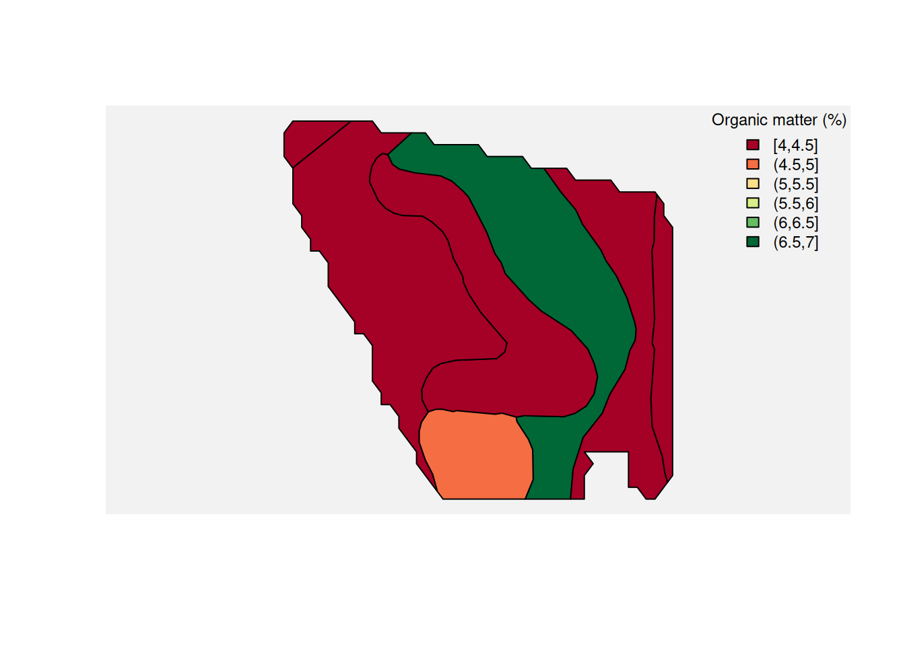
And here is the same idea for clay content.
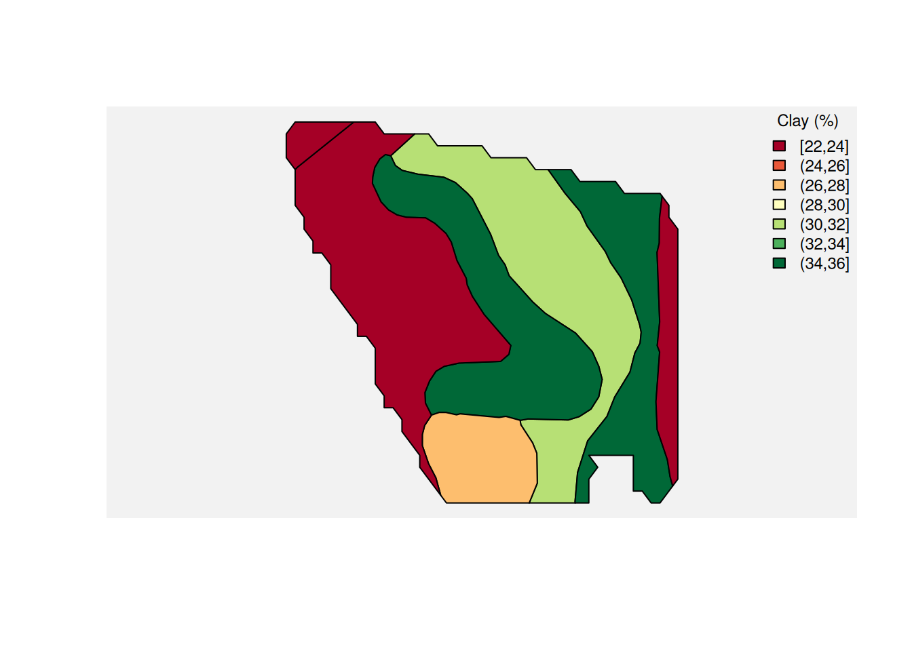
Joining Yield and Soil
Now we can do what really matters: relate soil and yield.
Before joining, both layers must share the same CRS. Then st_join() assigns soil attributes to each yield point based on which SSURGO map unit contains it.
complete_soil_data <- st_transform(complete_soil_data, st_crs(corn_yield))
yield_and_soil <- st_join(corn_yield, complete_soil_data)
yield_and_soil <- yield_and_soil[, c("yield_bu", "muname", "om.r", "claytotal.r")]Once every yield point carries the soil attributes from its map unit, we can ask spatial and agronomic questions at the same time.
Average yield by soil map unit. We aggregate yield observations within each map unit and color the polygons accordingly. Map units that support higher yields stand out immediately.
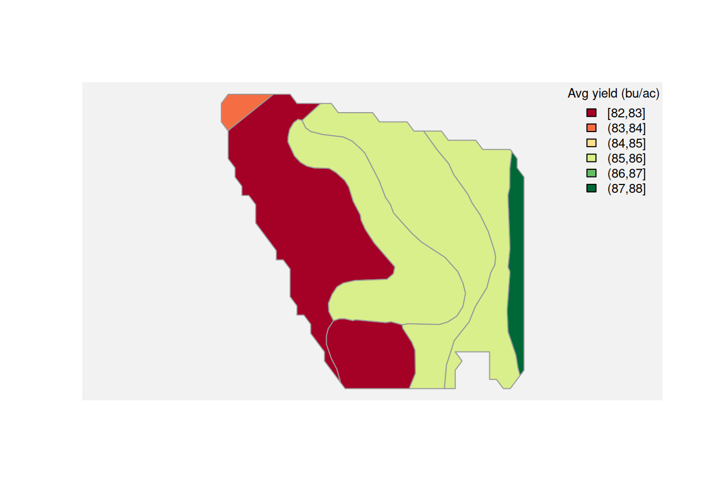
Yield and organic matter. Higher OM is generally associated with better water-holding capacity and nutrient cycling. Each point is one yield observation; the trend line summarizes the overall relationship.
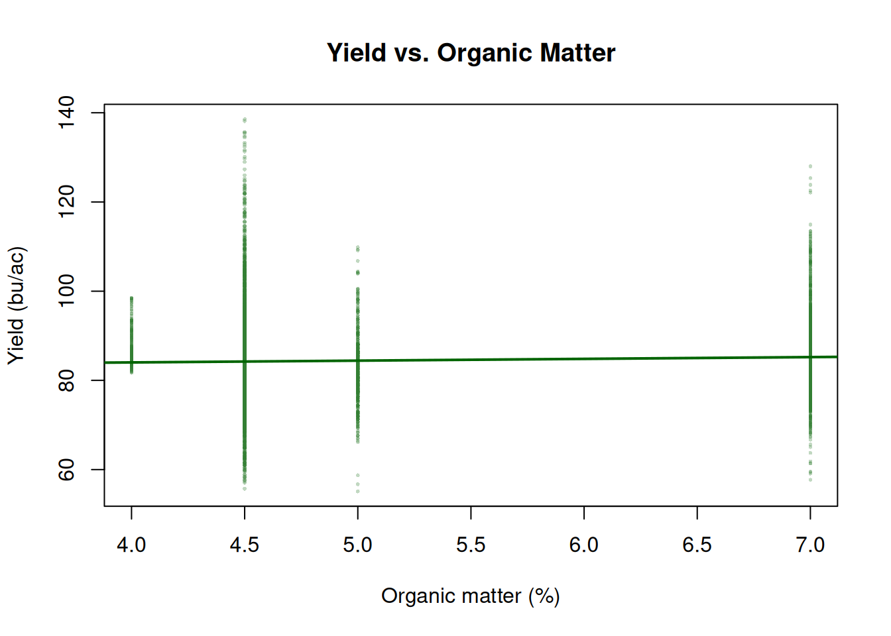
Yield and clay content. Clay affects drainage and compaction. Moderate clay can be beneficial, but very high clay often restricts root development and drainage, showing up as a negative or non-linear yield response.
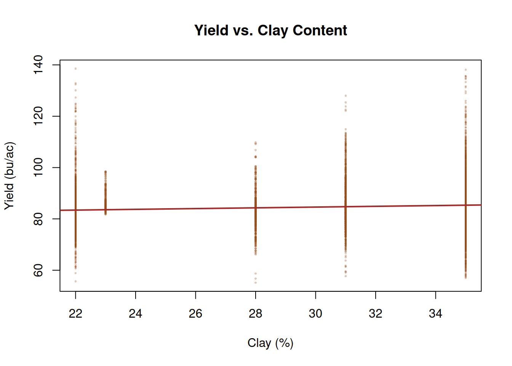
Notice what happened. We started with a map, but the scientific question quickly became familiar:
Which soil characteristics are associated with better or worse performance?
As you can tell, we cannot infer much from this analysis. We are unable to allocate much of the variability in yield data to the soil characteristics. There could be other factors at play that we not exploring in this analysis.
Spatial Operations with Shapes
Sometimes you do not just want to overlay two existing layers. Sometimes you want to define a new area and ask what happens inside it, outside it, or across several treatment zones combined.
That is where operations like st_intersection(), st_difference(), and st_union() become useful.
Intersection
Suppose a foliar treatment was applied to a specific part of the field.
Core pattern:
yield_inside_aoi <- st_intersection(yield_map, area_of_interest)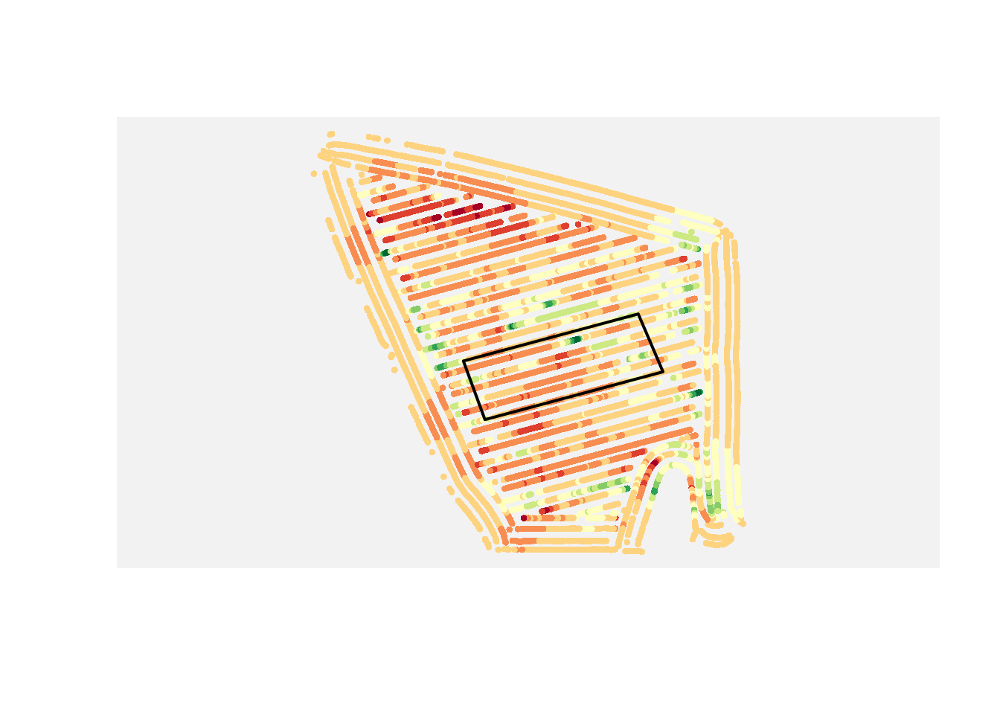
If you want only the yield points inside that treatment area, use an intersection.
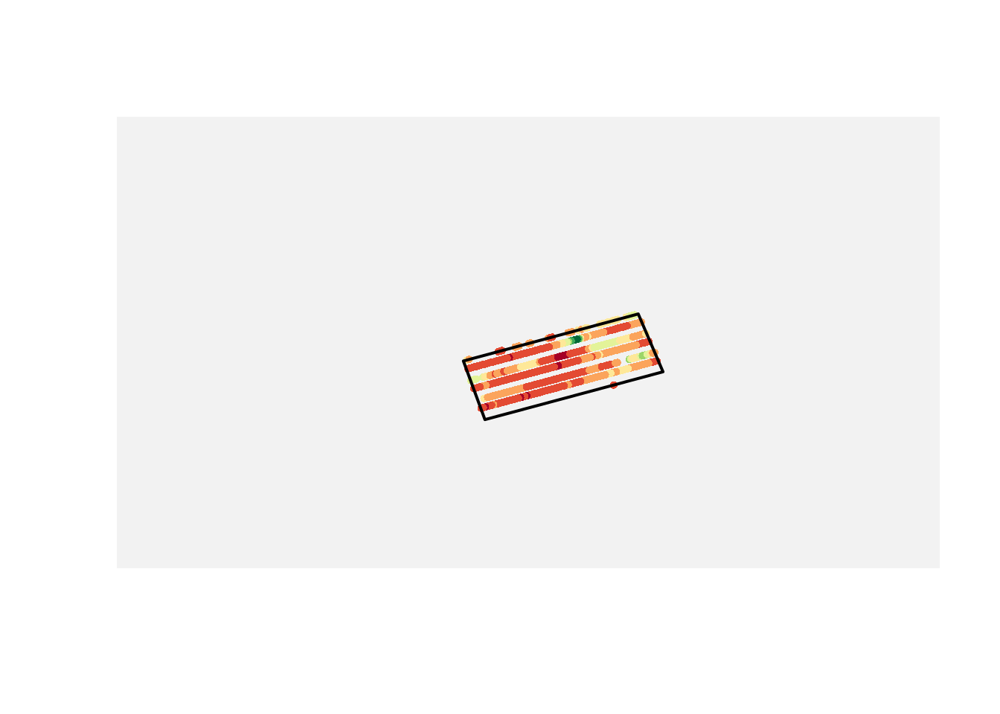
Difference
If you want the points outside that area instead, use a difference operation.
Core pattern:
yield_outside_aoi <- st_difference(yield_map, area_of_interest)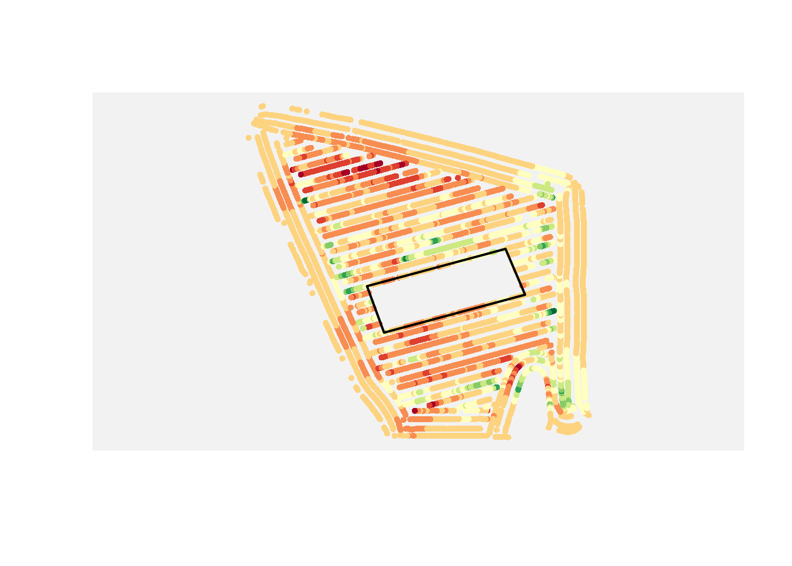
Union
If you have multiple polygons and want to analyze them as one combined region, use a union.
Core pattern:
combined_area <- st_union(area_1, area_2)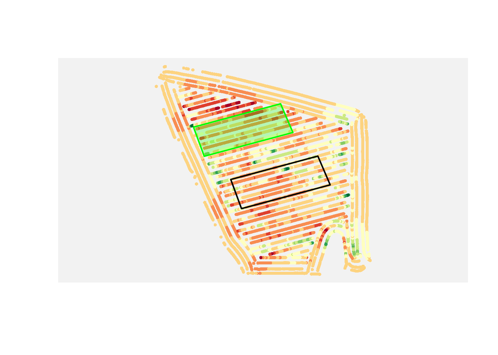
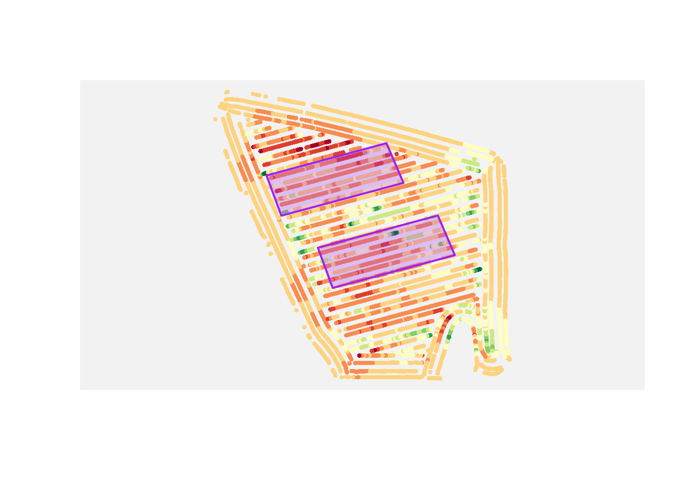
These operations are conceptually simple, but they are powerful. They let you ask treatment questions with spatial data instead of only staring at the map and guessing.
These are examples, not the full toolbox. There are many other topological operations in spatial analysis, and we will explore additional ones in the exercises.
Part 3: Rasters
Raster Intuition: A Quick NDVI Example
So far, we’ve treated space as discrete objects (points and polygons). Rasters take a different view: space as a continuous surface.
Think about NDVI maps. NDVI is commonly used as a quick proxy for crop vigor, where higher values often indicate greener, more active vegetation.
The key point is not the specific index formula. The key point is structure:
- a raster is a grid of cells
- each cell stores one value
- neighboring cells let us see spatial patterns
A raster is not just a data format. It is an assumption that the variable we care about exists everywhere in space, even where we did not measure it.
So when you look at an NDVI map, you are already thinking in raster logic.
This NDVI example is from the same field as the yield map, so we can use it to connect raster and vector thinking.
First, let us inspect raster structure: bounding box (spatial extent) and resolution (cell size).
For that, we can use the stars package, which provides a convenient way to read and work with raster data in R. There are other packages as well, like terra and raster, but stars is a good choice for this example.
library(stars)
ndvi <- read_stars("data/example_ndvi.tif")
ndvistars object with 2 dimensions and 1 attribute
attribute(s):
Min. 1st Qu. Median Mean 3rd Qu. Max.
example_ndvi.tif 0.3816743 0.5375135 0.5492938 0.5459545 0.5602355 0.5785804
NA's
example_ndvi.tif 469
dimension(s):
from to offset delta refsys point x/y
x 1 39 487110 10 WGS 84 / UTM zone 15N FALSE [x]
y 1 37 4613090 -10 WGS 84 / UTM zone 15N FALSE [y]When we print the ndvi object, we can see the three things that define a raster: its extent, its resolution, and its coordinate reference system (CRS).
The extent tells us where the raster exists in space, the resolution tells us how big each cell is, and the CRS tells us how the raster is positioned on Earth.
Resolution controls what patterns you can see. A 10 m raster can capture within-field variation. A 1 km raster cannot.
Changing resolution changes the question you are asking.
For this lecture note, I have extracted the NDVI raster using the pacu package. I will not go into much detail about it here, but if you are interested, you can check out this blog post about pacu for more information on how to access and process satellite data in R.
Now, we can plot the NDVI raster to visualize the spatial patterns of vegetation vigor across the field.
plot(ndvi,
main = "NDVI Map",
col = hcl.colors(6, palette = "RdYlGn"))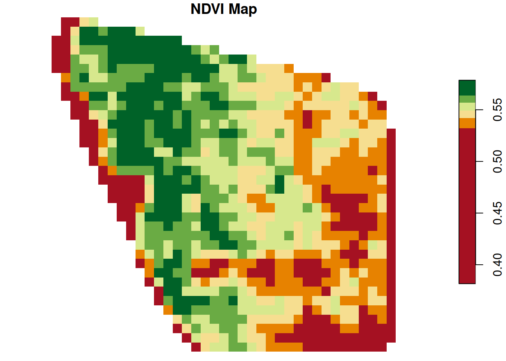
Now let us focus on a small part of this raster and explore it both as an image and as a matrix. Let us subset only the first 5 rows and columns.
This makes the grid structure concrete. NA values are unfilled in the map, while valid values are colored based on where they fall in the value range.
This matrix is the raster with its spatial context removed. A raster is just a matrix plus information about where that matrix sits on Earth.
tl.corner <- ndvi[1, 1:5, 1:5]
plot(tl.corner,
main = "Focusing on the topleft corner",
col = hcl.colors(6, palette = "RdYlGn"))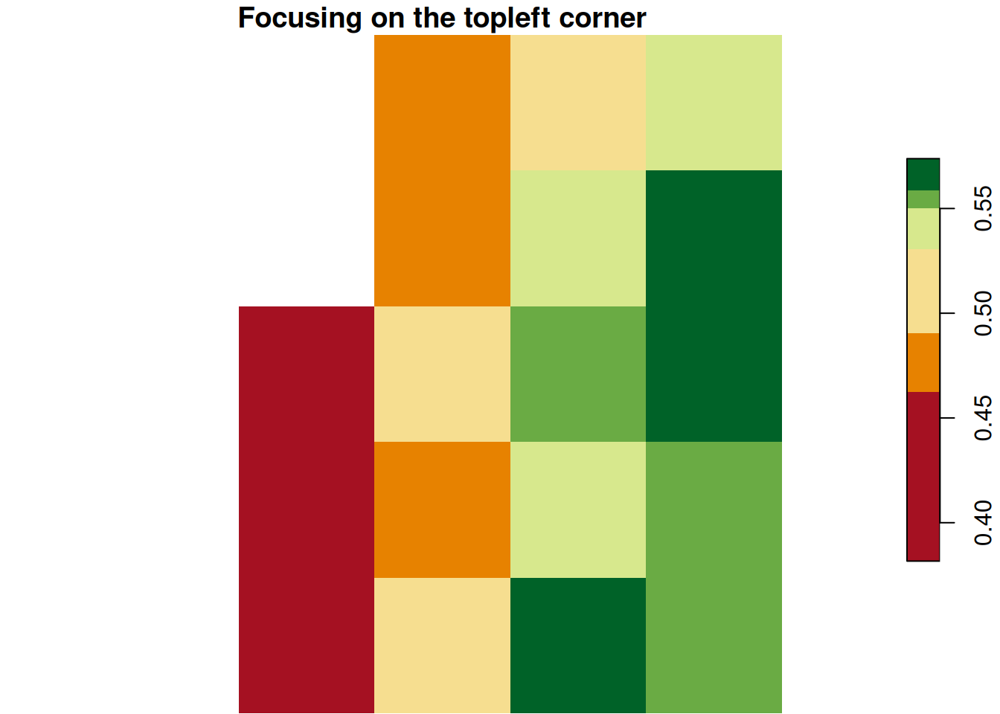
t(as.matrix(tl.corner[[1]])) [,1] [,2] [,3] [,4] [,5]
[1,] NA NA 0.4683706 0.5176690 0.5477387
[2,] NA NA 0.4770957 0.5436720 0.5659866
[3,] NA 0.4205244 0.4947885 0.5520468 0.5738078
[4,] NA 0.3816743 0.4815275 0.5489536 0.5586801
[5,] NA 0.4334736 0.5112736 0.5592239 0.5541475In practice, we interpret low, medium, and high NDVI zones, then ask what might be driving those differences: stand count, moisture, nutrient stress, compaction, disease pressure, or something else.
Notice something important: NDVI already gives us a complete surface. Every cell has a value.
Some rasters come directly from sensors, like NDVI. Others are built from models, like interpolated soil maps. The difference matters.
With NDVI, every location already has a value. With soil samples, most locations have no value at all.
If we want a raster map, we have to create those missing values.
From Points to Surfaces
In the NDVI example, we started with a complete raster surface. Now we switch to the opposite workflow: we start with point observations and build a raster surface from them.
Let us build that idea with a field example.
The Observed Soil Samples
Now let us map the sampled soil P values.
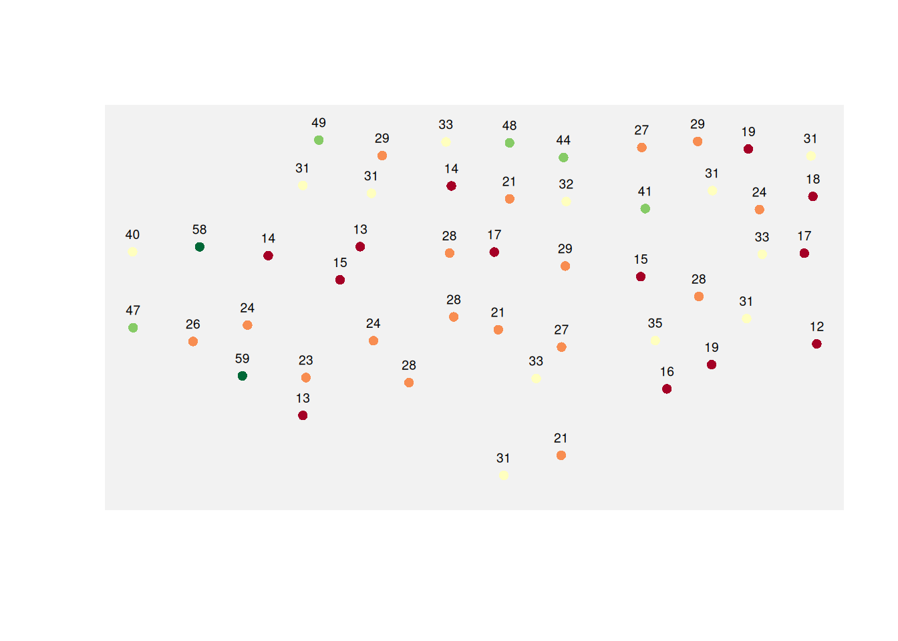
Here is the field with the empty grid overlaid.
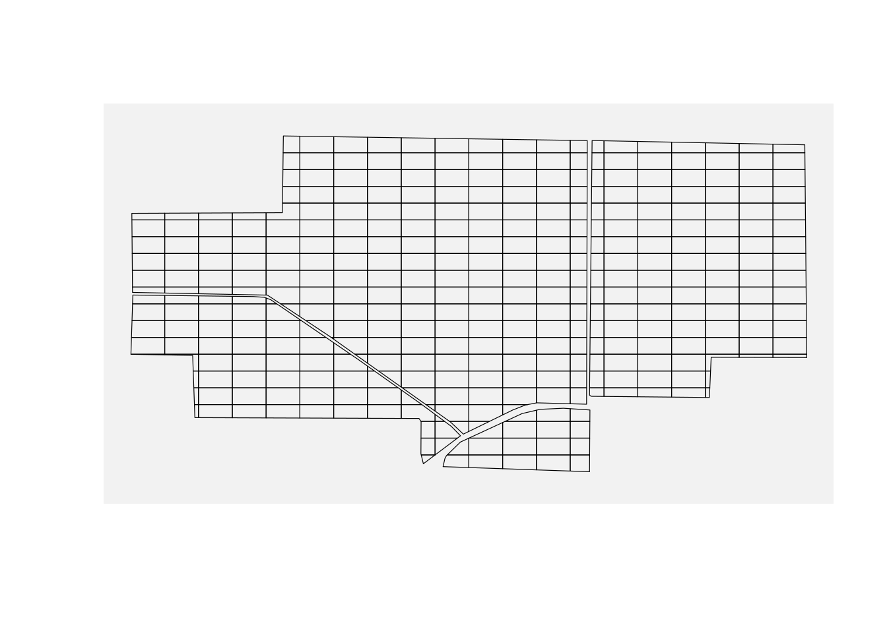
Each cell is just a spatial container waiting for a value.
A raster map can look smooth and convincing, but it is still a model. Values in unsampled locations are estimates, not observations.
A smooth raster can look more certain than the data justify. Two different interpolation methods, or even small changes in parameters, can produce noticeably different maps from the same points.
And here is the same field with the grid overlay.
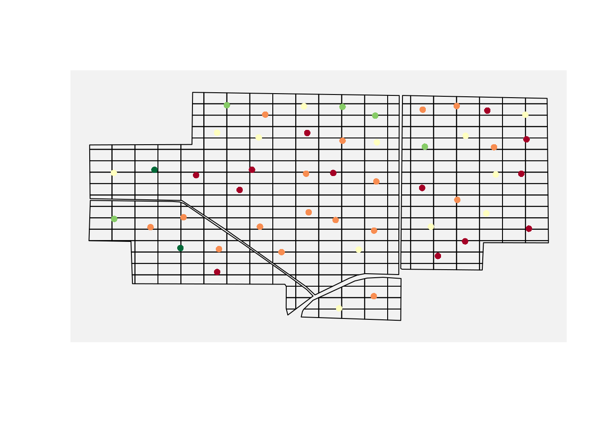
Now the limitation becomes unavoidable: most cells have no data, but every cell needs a value.
That means we need to interpolate.
Interpolation is not just about filling gaps. It is about using the sampled data to estimate quantities of interest at locations we never sampled.
Part 4: Interpolation
Interpolation Intuition: Start Simple
Interpolation means estimating values at unsampled locations using the values measured at nearby locations.
The most intuitive principle is simple:
Things that are close together tend to be more similar than things that are far apart.
Let us make that idea concrete with a small toy example.
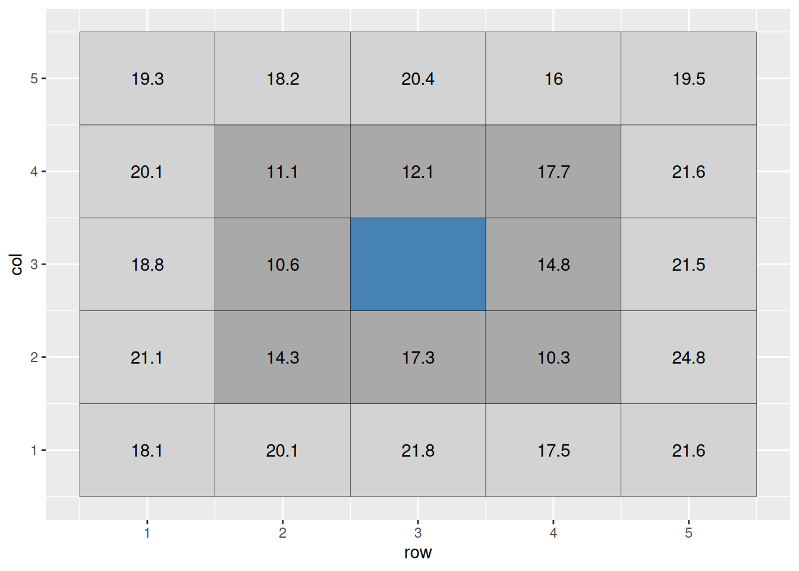
Suppose the center cell is missing. A basic idea would be to estimate it using the surrounding cells.
That leads to inverse distance weighting, or IDW. This is a weighted average where each nearby point gets more influence and each distant point gets less.
A common choice is inverse distance squared, which uses weights proportional to
\[ w_i \propto \frac{1}{d_i^2} \]
More generally, IDW often uses
\[ w_i \propto \frac{1}{d_i^p} \]
where \(p = 2\) is a common default.
For the nearest ring of surrounding cells, a plain average would be:
\[ \text{cell value} = \text{mean}(16.6, 17.9, 13.1, 19.1, 11.6, 11.1, 16.2, 16.2) = 16.6 \]
But we can improve on that by allowing farther cells to contribute less to the estimate.
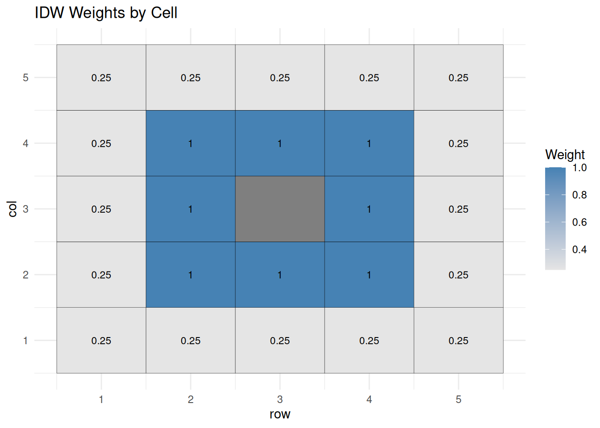
The weighted mean is
\[ \text{weighted mean} = \frac{\sum \text{weighted value}}{\sum \text{weight}} \]
In this example, the estimate is about 15.7.
That is the basic logic of IDW.
This same idea applies to field data: each soil sample influences nearby locations, but we rarely know the exact shape of that influence.
Kriging
IDW is useful, but it is still fairly crude. It assumes the influence of neighboring observations falls off with distance in a simple way.
You can think of kriging as a smarter version of IDW that learns the weighting rule from the data instead of assuming one.
Kriging goes a step further. Instead of using a fixed weighting rule, it models how similarity between observations changes with distance.
That relationship is summarized in a semivariogram.
The semivariogram measures how different values are, on average, as a function of distance.
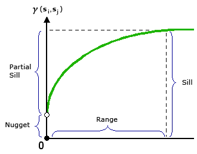
The basic idea is this:
- pairs of points that are close together tend to have smaller differences than points that are farther apart
- pairs that are farther apart tend to have larger differences
- the semivariogram quantifies that pattern
The semivariogram also tells us:
- how quickly similarity breaks down with distance (the range)
- how much variability exists overall (the sill)
- how much noise or measurement error exists (the nugget)
Once we estimate that relationship, kriging uses it to decide how much weight to give each nearby observation when predicting unsampled locations.
Compared to IDW:
- IDW assumes a fixed distance-based rule
- kriging learns how fast similarity decays from the data
- this lets kriging adapt to different spatial patterns instead of imposing one rule everywhere
One important advantage of kriging is that it does not only predict values, it can also estimate prediction uncertainty. Areas far from sampled points typically have higher uncertainty, even if the map looks smooth.
Kriging assumes the spatial structure you estimate continues across the field. If that assumption is wrong, for example because of abrupt management zones, sharp soil boundaries, or sampling errors, predictions can be misleading.
In other words, kriging assumes the spatial relationship estimated from the variogram is consistent across the field.
I do not need you to become geostatisticians in one lecture. What I do need is for you to understand why kriging often outperforms a rougher method: it learns the spatial structure from the data.
Kriging tends to outperform simpler methods when there is a clear spatial pattern in the data. When data are sparse or highly irregular, the advantage over simpler methods may be smaller.
Now let us see how that idea turns into an actual workflow in R.
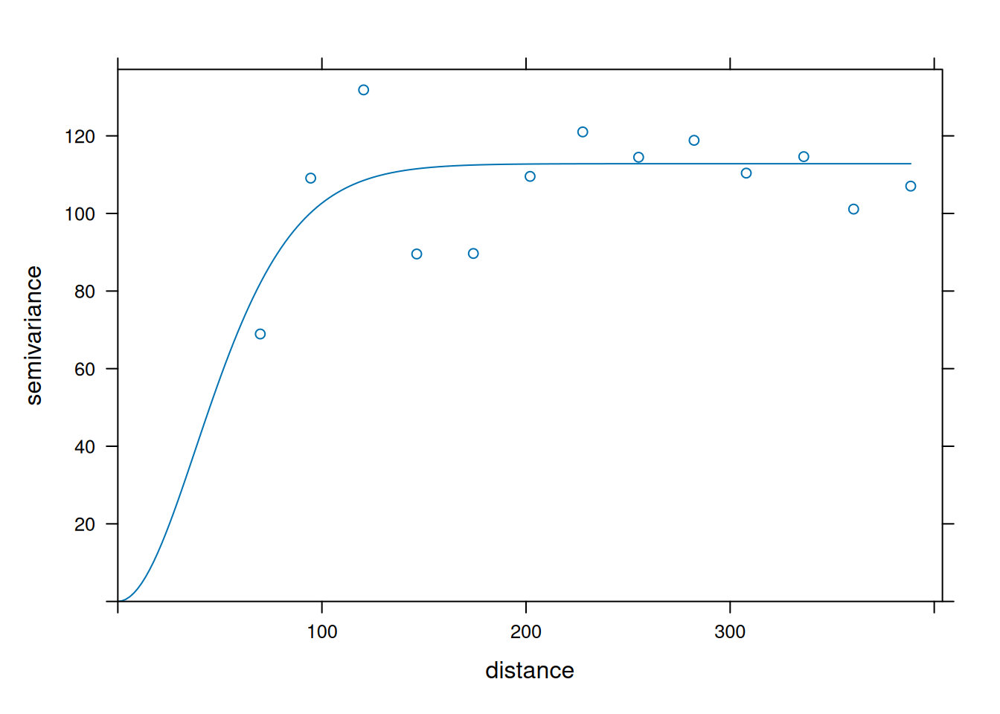
In this plot, each point summarizes how different pairs of observations are at a given distance. The fitted curve is the model kriging uses to assign weights. As semivariance increases with distance, nearby points get more influence than distant points.
The semivariance is used to determine the Kriging weights. Although I do not expect you to learn how these weights are computed in this short lecture, I think it is useful to look at a spatial representation of how distance affects the Kriging weights when interpolating values in this field.
Unlike IDW, distance alone does not determine kriging weights. The variogram controls how quickly similarity decays, so points at similar distances can still have different influence.
Let’s imagine we are predicting soil P at the location marked by the red triangle. The figure on the left shows how far each sampled location is from the prediction point.
The image on the right shows the computed Kriging weights. This shows that points that are closer to the location for which we want to make a prediction are more influential. Also, since the semivariance stabilizes after \(\approx\) 110 m, we can see that points beyond that range have very little influence because the model treats them as effectively uncorrelated with the prediction location.
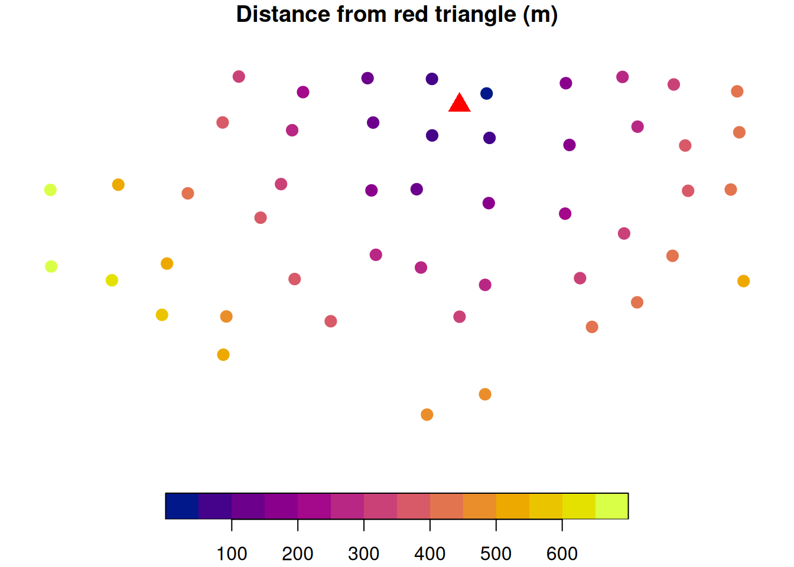
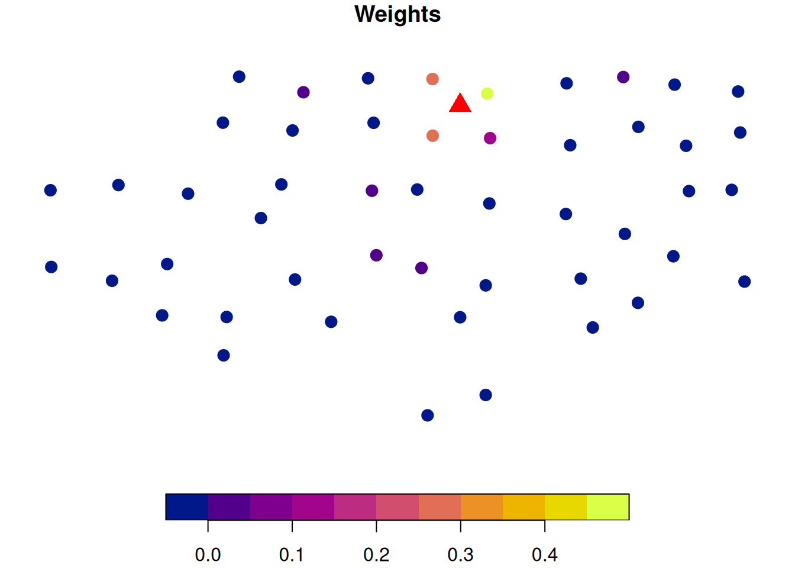
Here is the interpolated soil P surface.
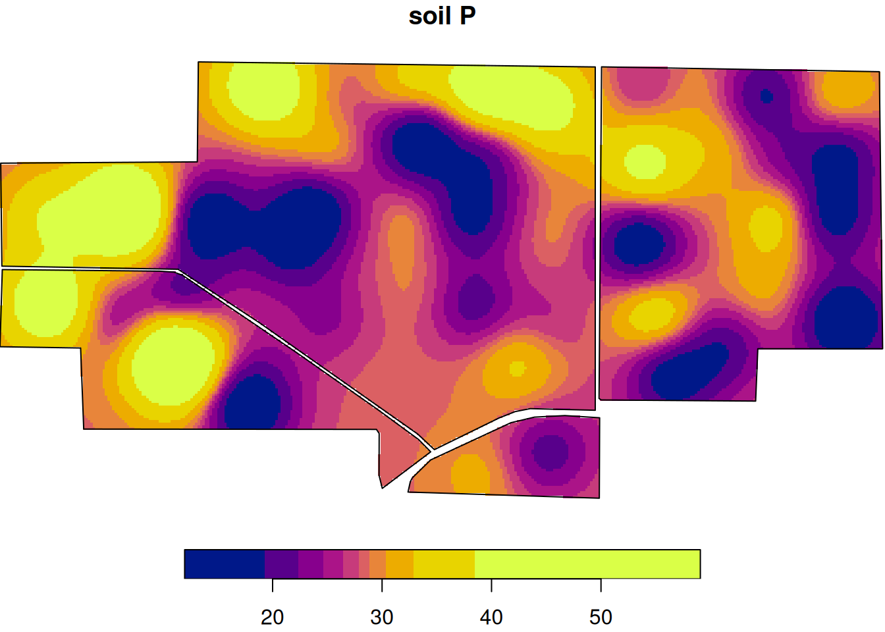
And here is the kriging prediction variance (uncertainty) surface.
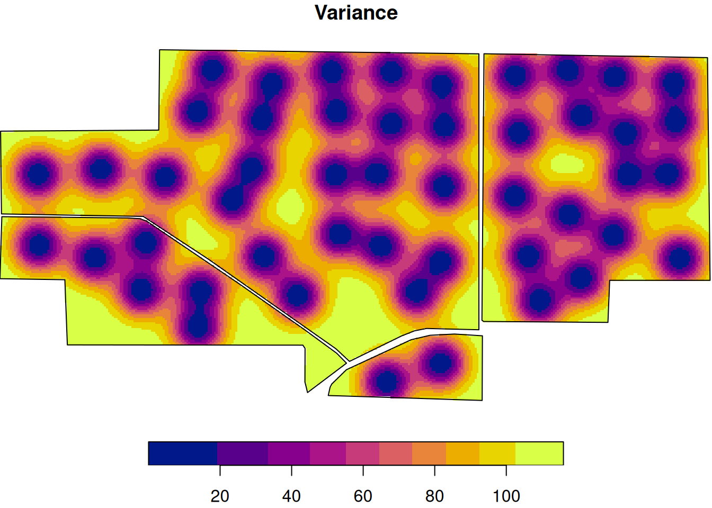
Notice that uncertainty is usually higher farther from sampled points. A smooth prediction map does not mean equal confidence everywhere.
This map is smoother than the raw grid example because kriging is filling in the surface between measured points using the estimated spatial correlation structure.
Wrap-Up
Analyzing spatial data can look intimidating because the code is a little heavier and the objects are less familiar. But the logic is not exotic.
We worked through four core ideas:
- Projection tells us how locations are represented and whether measurements like area or distance make sense.
- Vector data let us store and analyze points and polygons such as yield monitor records, field boundaries, and soil map units.
- Raster data let us represent spatial surfaces as grids of cells, each with a value.
- Interpolation lets us move from scattered observations to continuous prediction surfaces and eventually to recommendation maps.
If there is one theme running through this lecture, it is this:
A spatial analysis is only as trustworthy as its geometry, units, and assumptions.
Do not let a nice-looking map do all the thinking for you.